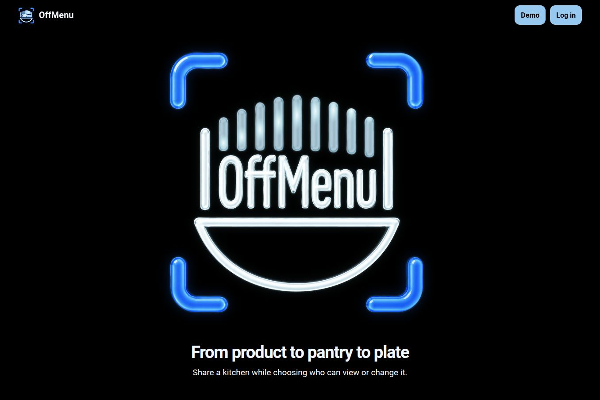
OffMenu
A web platform for barcode inventory, ingredients, recipe discovery and meal planning.
Food systems · Web platform · Python / SQLite · Source
I’m Matthew, a Melbourne-based engineer. I connect architecture with practical delivery and am available for fully remote work.

A web platform for barcode inventory, ingredients, recipe discovery and meal planning.
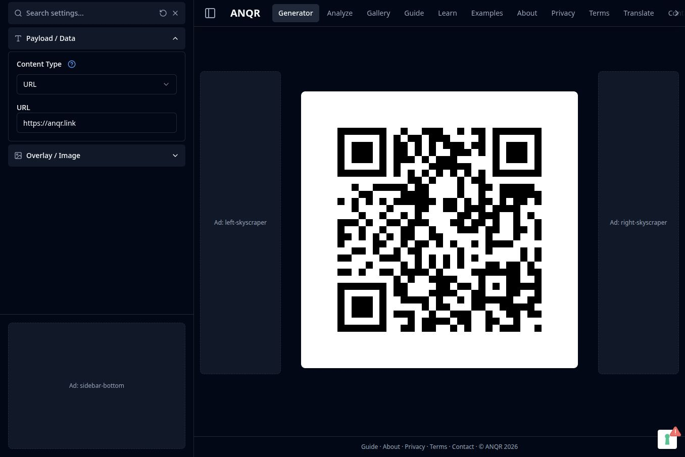
An open-source toolkit for generating, styling and analysing QR codes across web, API and MCP. The live generator sits alongside capability and conformance tools, community translation resources covering 87 languages, and the archived original monorepo.
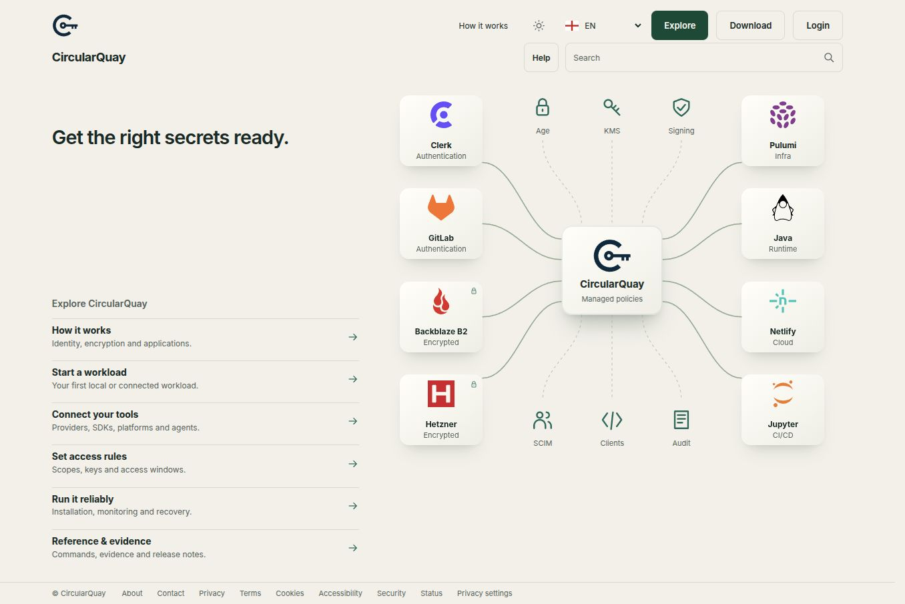
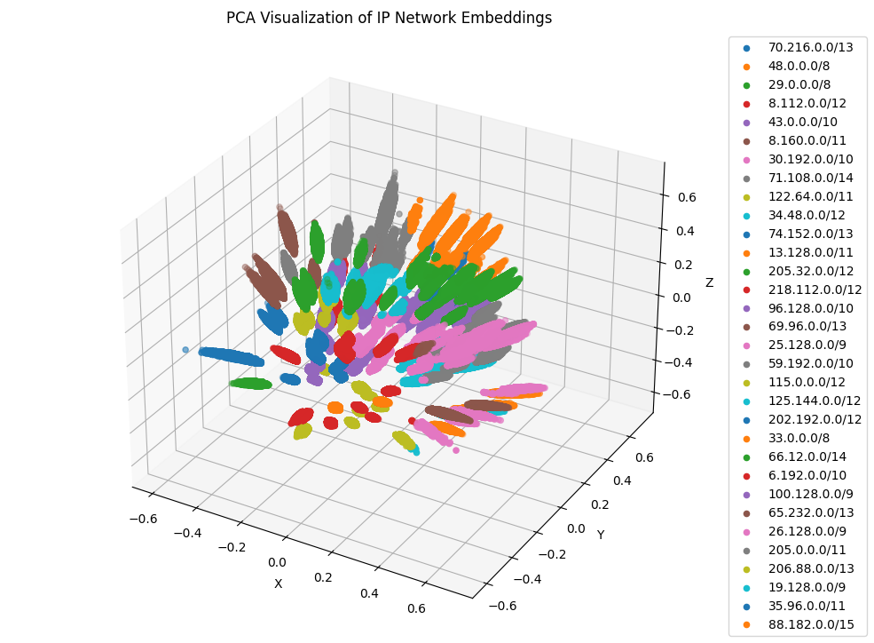
Exploring how AI and natural language processing can make IP networks easier to understand. This research combines IP-address vector embeddings, geolocation and traceroute topology to investigate network relationships, detect anomalies and turn technical observations into readable summaries.
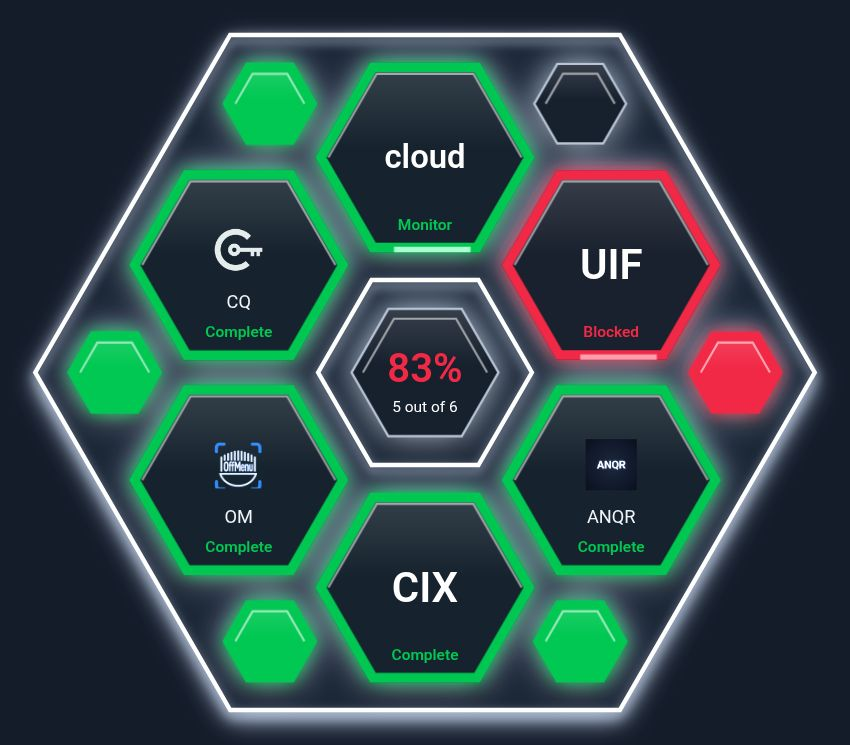
A shared operational view for concurrent, distributed multi-agent AI work. Explore the monitoring approach and public status interface.
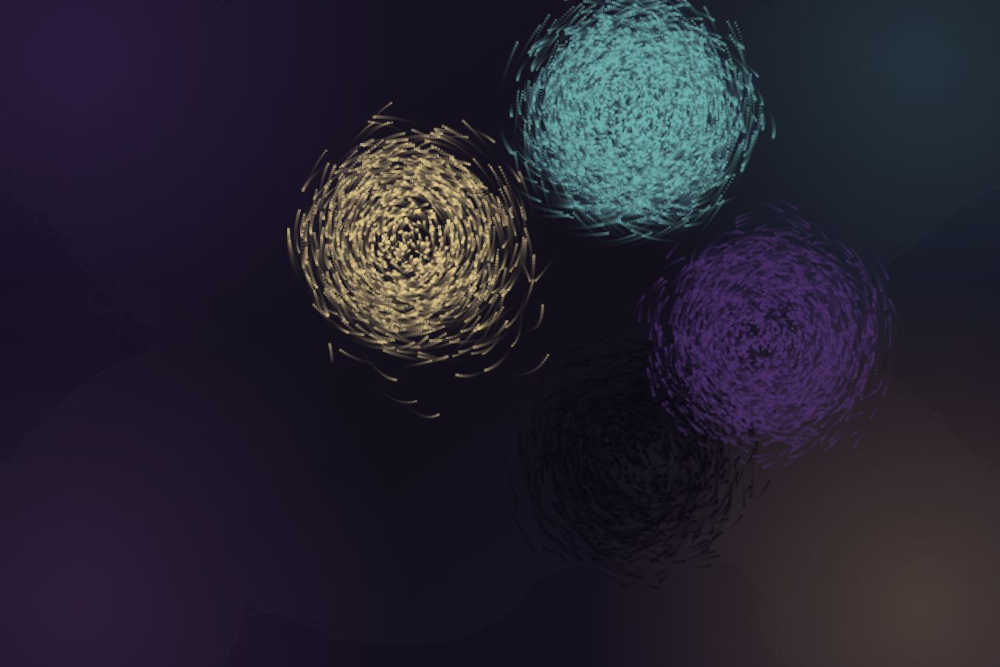
An interactive portrait whose four-tone pixels form a swarm that responds to touch and motion.
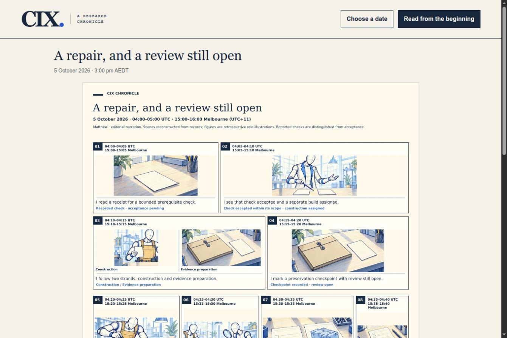
An illustrated record of Colour Index Compression research, its experiments and how the ideas have changed. Dated journal entries show what has been tested.
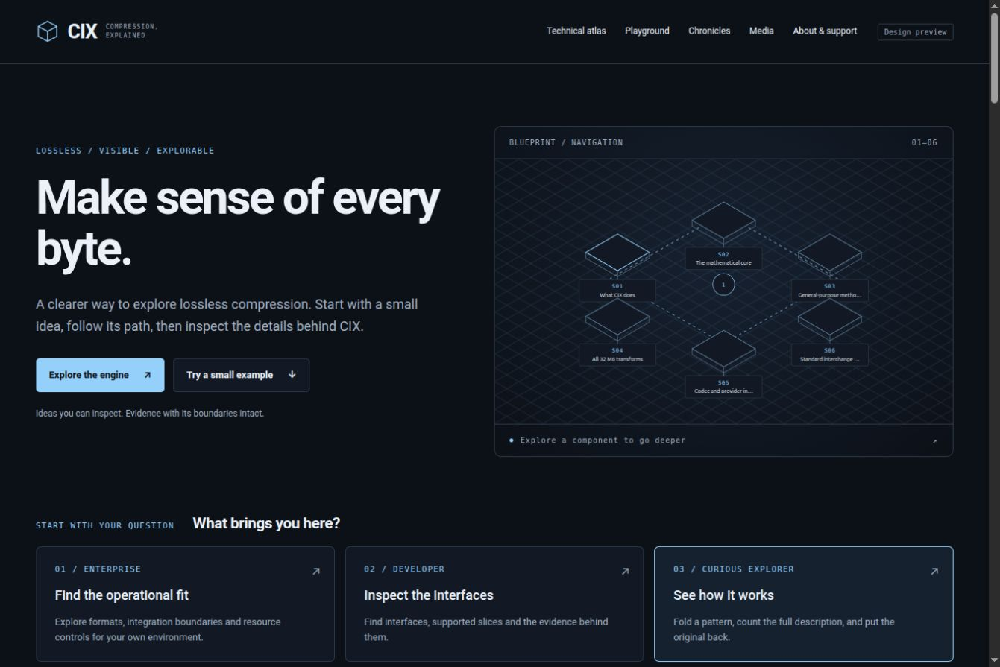
A design prototype that explains lossless compression through a small example and the technical ideas behind it.
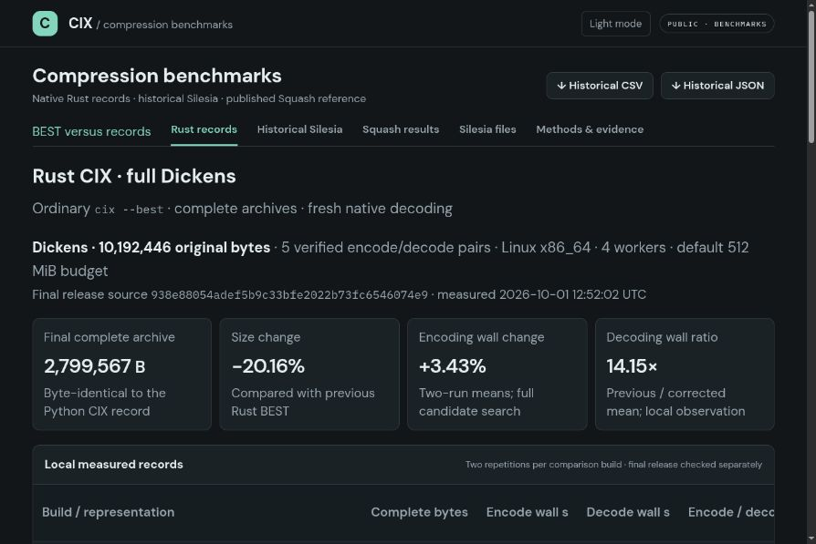
Colour Index Compression research explores lossless compression, reversible transforms and streaming formats, with code for testing and reproducing results. This dashboard brings together development benchmarks, earlier baselines and measurement methods. Findings apply to the examples tested; the associated research domain is 1e100.network.
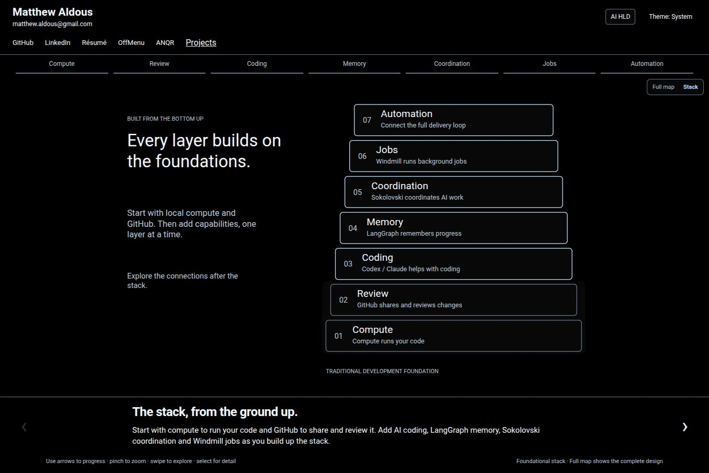
UIF / USF software delivery tools turn requirements into small changes, run repeatable checks and record the results. This interactive architecture guide explains the components and connections used in local computing and coordinated AI engineering. The guide and USF source describe work in development.
An archived prototype for exploring lending submissions and LIXI data exchange.
Research & development
How can we turn changing IP networks into information people can understand? My research explores vector embeddings that preserve relationships between IP addresses, bringing geolocation and traceroute observations together to reveal network structure.
Those representations provide a basis for comparing topology over time, identifying unusual patterns and translating technical observations into natural-language summaries. The article presents the approach and its visualisations, rather than a claim of validated forecasting accuracy.
Directions for extending this work include retrieval-augmented generation (RAG), grounding explanations in retrieved network observations, and IP-network forecasting: exploring whether patterns over time can help anticipate changes in routes, connectivity and topology.
Read the research article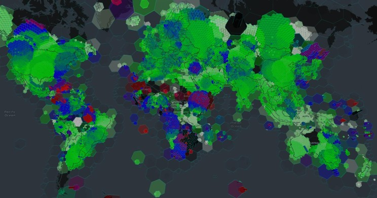
I’m a senior engineer and technical lead based in Melbourne. I’ve worked across internet infrastructure, telecommunications, research computing, enterprise software, data platforms and cloud engineering. My work connects architecture with practical delivery: designing systems, building them and keeping them running.
That has meant working on platform engineering, cloud delivery, release processes and production reliability, as well as leading engineering teams. My experience spans education, financial technology, media, networking, customer data and workflow systems.
I now work on full-stack engineering and AI automation. Alongside that work, my independent projects explore food systems, QR tools and compression research, bringing together the infrastructure and software sides of my experience.
I previously lived in Amsterdam, the Netherlands, and hold a Bachelor of Software Engineering (Honours) from the University of Melbourne.
Bachelor of Engineering (Software) Honours
Co-founder / systems administration
Senior Systems Administrator
Research computing & neural-network tools
Materna, Immediate & LGI
Messaging platforms
Senior Engineer / Project Manager
Senior Systems Engineer
Telstra
Senior Enterprise Architect
SubSpace & LynkState
VC consultancy / network engineering
VC consultancy / R&D lead
Lexer, CitoPlus & Paperly
Solutions Director
Senior Engineer
Senior Engineer
Earlier projects in learning environments, neural networks, messaging and multimedia.
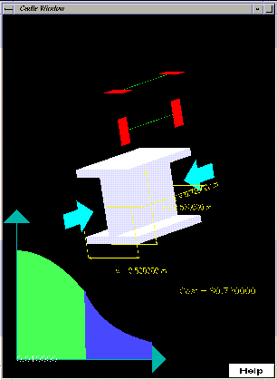
An interactive mechanical-engineering learning environment, using animation and feedback to explore component behaviour.
Experimental neural classification of EEG signals. Research tooling, with further clinical trials still required.
A conversational experiment using Bayesian filtering, neural networks and statistical methods.
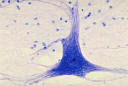
A parallel neural-network engine combining genetic algorithms and neural networks to explore classification parameters.
A carrier-grade Benelux SMS portal integrating web, email and bulk messaging interfaces across Europe.
An open-source multimedia conferencing proof of concept, with dynamic web-based XSL rendering.
A pan-European document rendering and ordering system for retail advertising and in-store leaflets.
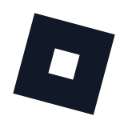
Proof-of-concept adventure-world games built in Roblox.
Get in touch about engineering, architecture, cloud platforms or automation.